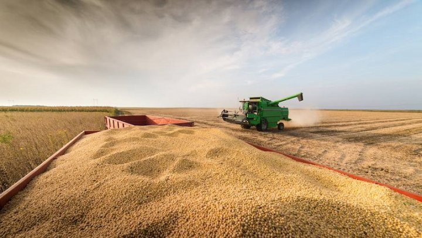

Opinión
Análisis. La lapicera de Batakis y el silencio de Cristina
Desde los primeros anuncios de la nueva ministra de Economía no hubo pronunciamientos de la vicepresidenta ni de referentes del kirchnerismo al respecto. Qué significa ese silencio, y que implicancias tiene lo que sí dijo Cristina desde El Calafate. ¿Un apoyo tácito y un resguardo político?
Aves de rapiña. La fiesta del agropower: las patronales del campo aprietan ante un gobierno que viene cediendo
El de hoy es el cuarto “paro” (lock out) de la Mesa de Enlace, en medio de una crisis económica y social que ya tiene a más de 17 millones de personas en situación de pobreza. A pesar de las quejas del Gobierno, en la última semana se tomaron dos medidas que volvieron a favorecer a las patronales agrarias. Con ganancias récord durante el primer semestre y la mejor liquidación de divisas de la historia en el mes de mayo, los dueños de la tierra aprovechan para aumentar sus exigencias.
